Вы отсканировали QR-код и попали в мир карикатур воронежского художника Сергея Белозёрова.
Здесь собраны правила, история создания игры, подробные биографии создателей, а также вы можете оставить нам тёплое послание.
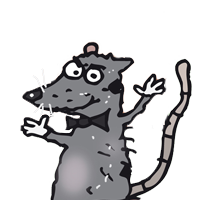
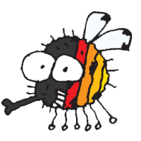
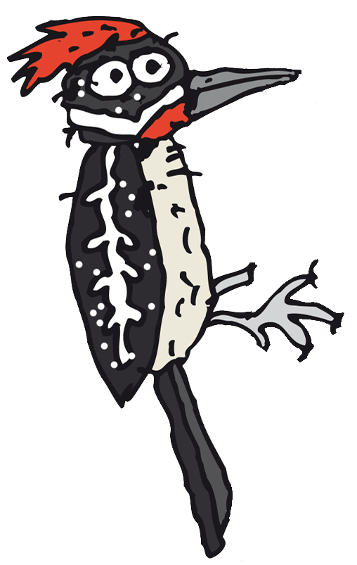
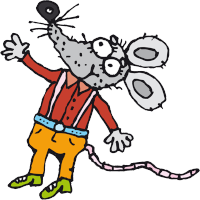
Имаджинариум: Карикатуры Сергея Белозёрова – ассоциативная игра. Ведущий придумывает ассоциацию к своей карте, остальные подбирают свои, затем голосуют.
Первым дойти до финиша (клетки №30), набрав наибольшее количество очков. Очки начисляются за правильные ответы при голосовании.
50 карт с карикатурами, 10 карт усложнения, игровое поле (30 клеток), фишки, жетоны голосования.
Кто начинает:
Первый ведущий – тот, у кого день рождения ближе к сегодняшней
дате. Далее ведущий меняется по часовой стрелке.
Как проходит ход:
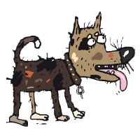
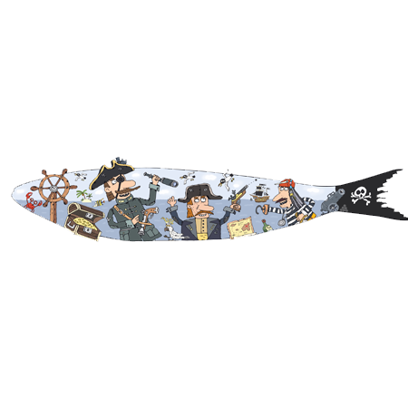
Фишки передвигаются на соответствующее количество клеток вперёд (или назад).
Если фишка ведущего попала на специальную клетку, он тянет карту и применяет задание:
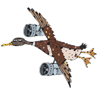
Эта игра сделана с любовью. В каждой карте – частичка творчества Сергея Белозёрова, воронежского карикатуриста. Мы надеемся, что игра принесёт вам столько же радости и смеха, сколько мы получили, собирая её.
Не бойтесь импровизировать. Если какое-то правило кажется вам сложным – измените его под свою компанию. Главное, чтобы всем было весело.
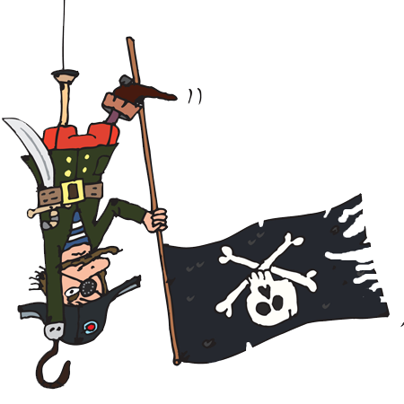
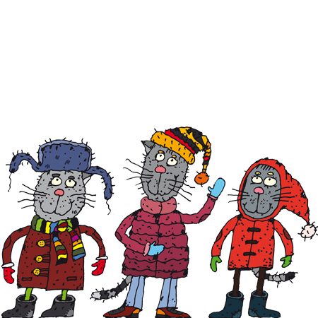
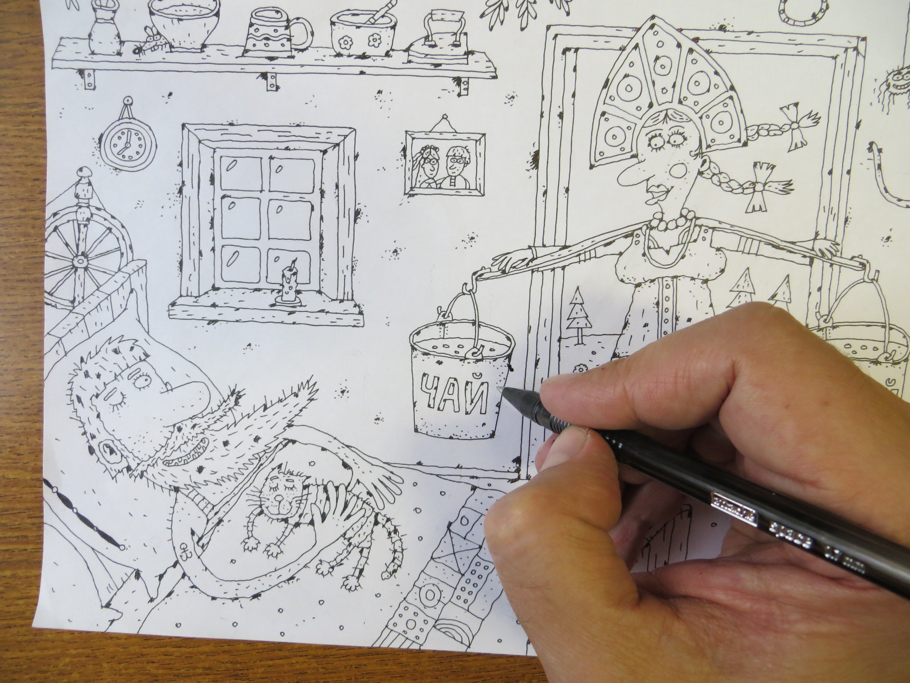
«Кофий чай» и первая линия.
Сергей сидел за своим рабочим столом и рисовал очередной
выпуск в «Комсомольскую правду» — как делал это уже тысячу раз
раньше. Рука привычно выводила линии, рождались персонажи,
лоси пили кофе, коты улыбались из-под усов. Обычный рабочий
день художника-карикатуриста. А Михаил в этот момент смотрел
на монитор отца и вдруг подумал: «А ведь это уже готовая
игральная карта. Только осталось добавить правила». В какой-то
момент стало понятно, что эти рисунки слишком живые, чтобы
просто лежать в папке. Им нужно двигаться, попадать в руки,
вызывать эмоции!
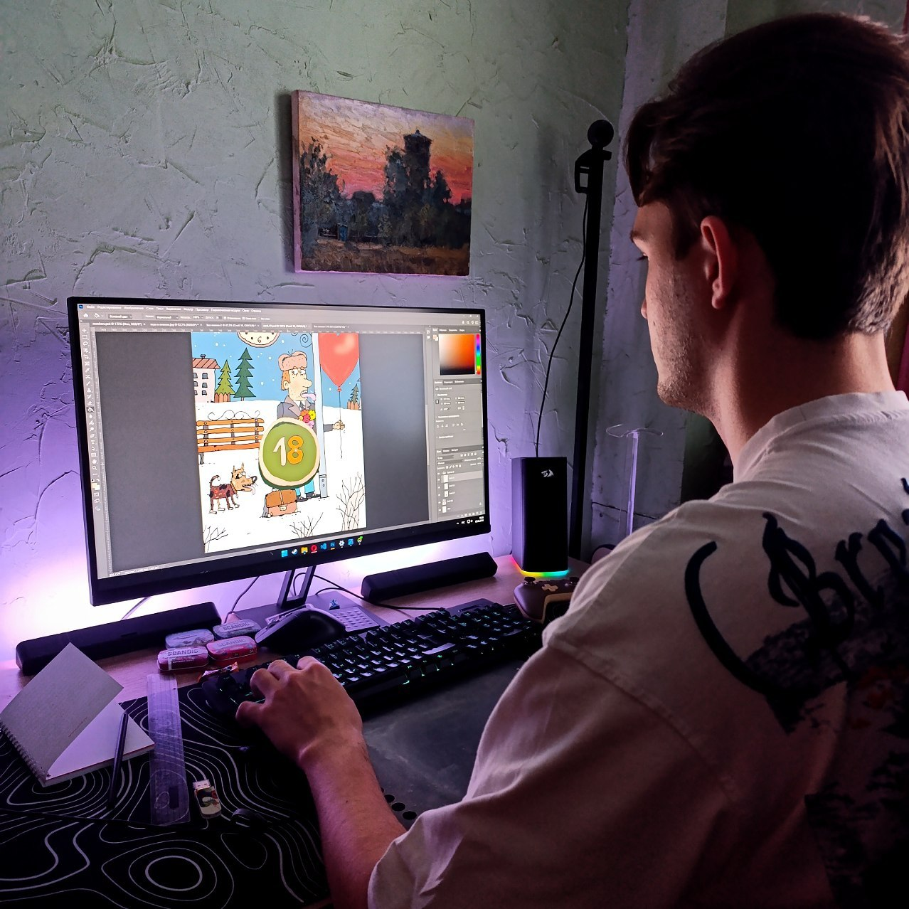
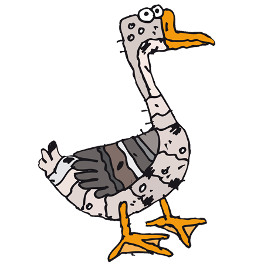
Цифровой цех: битва за пиксели.
Михаил полез в Фотошоп — потому что идею надо было срочно
проверить. Один в поле не воин, но когда на кону более 50
карт, а идеи сами продолжают лететь в голову и время
поджимает, приходится верстать до ночи. Пришлось разработать
несколько кастомных элементов дизайна, создать набор цифр,
определить цветовую палитру для каждого рисунка. После всего
этого началась «сборка» карточек — подгон размеров и
размещение всех элементов! Сам ещё до конца не знал, что
получится, но остановиться уже не мог. Параллельно
разрабатывал сайт, чтобы было куда выложить правила и всю эту
историю.
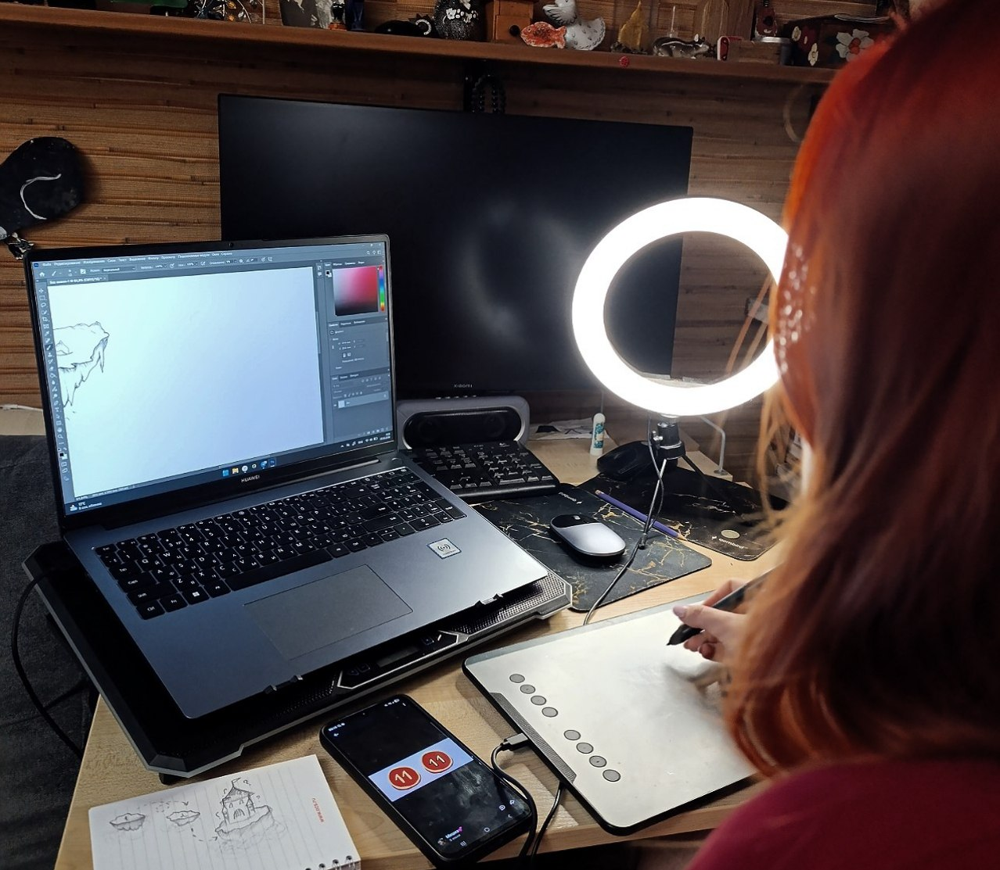
Планшет художника и поле мечты.
Дарья взяла тот самый графический планшет, на котором Сергей
рисовал свои карикатуры, и начала создавать игровое поле.
Пришлось продумать композицию с нуля, подобрать оттенки, чтобы
поле выглядело живым и не выбивалось из общего стиля
карикатур. После этого началась «притирка» — проверка, удобно
ли будет игрокам, хватает ли места для фишек и жетонов. Дарья
сама ещё не знала, получится ли так, как задумано, но бросить
уже не могла. Параллельно она помогала с отбором карикатур и
советами по дизайну карточек, чтобы игра выглядела цельно, от
первой линии до последнего уголка коробки.
Художник-карикатурист, иллюстратор, дизайнер. Создатель знаменитого «МОЁшкиного кота». Призёр международных конкурсов в Сербии, Италии, Китае.
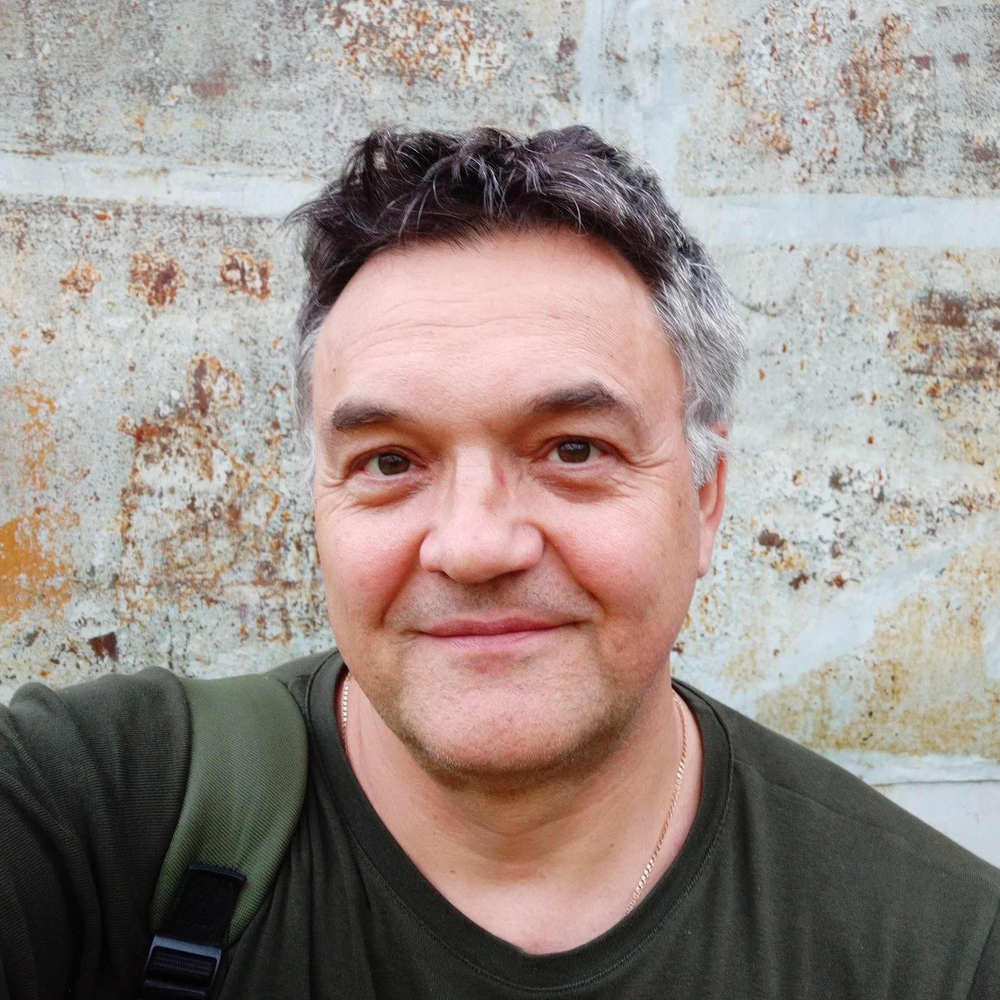
Родился 13 августа 1970 года в селе Новопавловка Кантемировского района Воронежской области.
Образование: Окончил факультет иностранных языков Воронежского государственного педагогического института (1991).
Школа: С 1991 по 2000 год работал учителем немецкого языка в средней школе №19, затем заместителем директора по учебно-воспитательной работе в лицее №3.
Путь в искусство: Дебютировал как художник в газете «Коммуна-Спорт». С 2001 года работал художником-дизайнером в газете «МОЁ!». Именно там он создал культового персонажа и достопримечательность Воронежа — МОЁшкиного кота, который впервые появился 27 марта 2001 года.
Сотрудничество: Публиковался в детских журналах «Весёлые картинки», «Ералаш», «Пионерская правда», «Чудеса и приключения детям», а также в изданиях Армении, Белоруссии, Германии, Казахстана, Эстонии («Täheke», «Hea Laps»), Франции. Работал с издательствами «Эксмо», Corpus, «Национальное образование». Сейчас сотрудничает с «Комсомольской правдой».
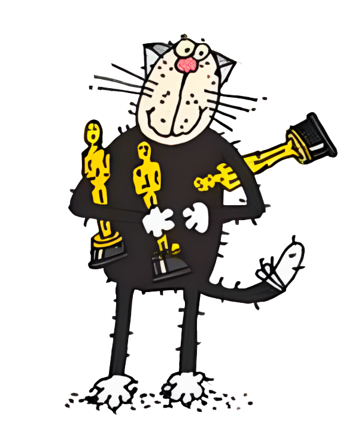
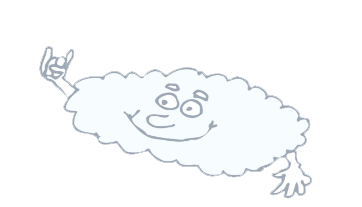
Родился 14 июля 2006 года в городе Воронеж.
Творческий путь: С детства увлекался искусством — рисованием и музыкой. Окончил курсы живописи в Воронежском художественном училище, но в итоге решил связать жизнь с техническим направлением и пошёл обучаться веб-разработке.
Музыка: Класс фортепиано и гитары. Сооснователь и участник рок-группы «Без Шуток!».
Роль в проекте: Инициатор создания игры. Придумал идею, адаптировал правила «Имаджинариума» под новый формат и создал дизайн карточек. Разработал этот сайт и организовал печать первого тиража.
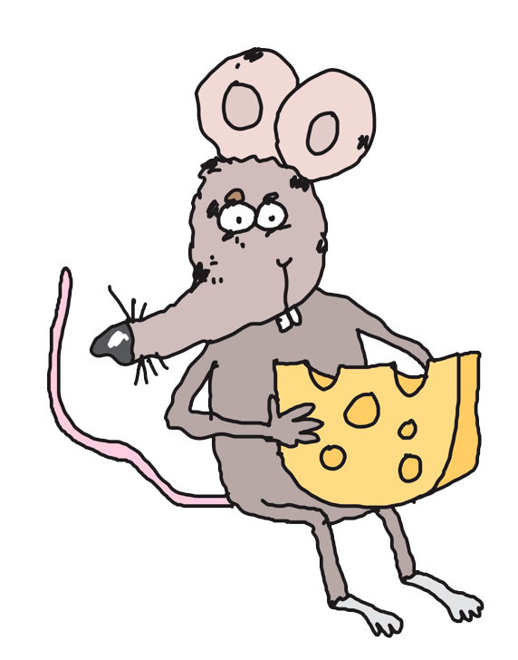
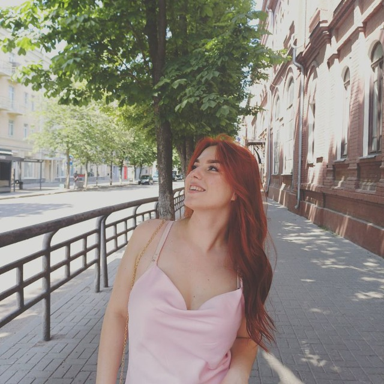
Родилась 14 октября 2007 года в Ухте.
Увлечения: С детства любит читать книги, изучать иностранные языки и заниматься рукоделием. Окончила курсы визажа и украсила мир не одним своим макияжем. Имеет настоящий талант к творчеству, хотя сама этого не признаёт!
Роль в проекте: Главный вдохновитель и креативный директор. Разработала дизайн-концепцию игры, участвовала в отборе карикатур и оформлении карточек. Создала игровое поле, придумав для него качественно новый формат. Именно Дарья придумала дополнительные карты и задания к ним, которые сделали игру ещё веселее и интереснее.
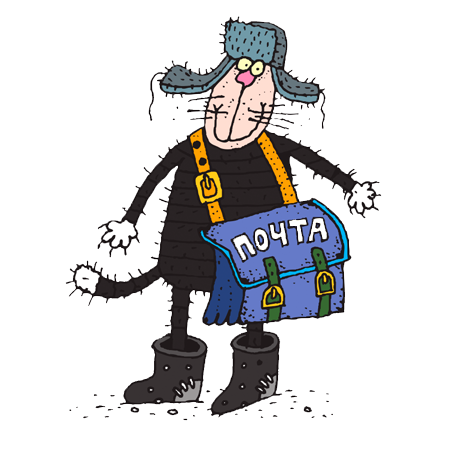
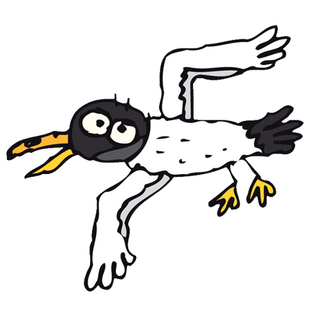
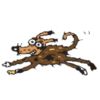
Мы будем рады вашим словам, идеям или просто тёплым пожеланиям.
- Нажимая «Отправить», вы соглашаетесь на
.
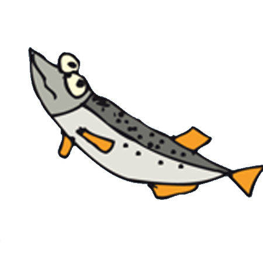
Настоящая политика обработки персональных данных составлена в соответствии с требованиями Федерального закона от 27.07.2006 № 152-ФЗ «О персональных данных» и определяет порядок обработки персональных данных и меры по обеспечению безопасности персональных данных, предпринимаемые сайтом «Каракули» (далее — Оператор).
Оператор ставит своей важнейшей целью и условием осуществления своей деятельности соблюдение прав и свобод человека и гражданина при обработке его персональных данных, в том числе защиты прав на неприкосновенность частной жизни, личную и семейную тайну.
При заполнении формы обратной связи на сайте вы предоставляете Оператору следующие персональные данные:
Сайт не использует cookies для отслеживания пользователей. Технические данные (IP-адрес, тип браузера) не обрабатываются и не хранятся.
Оператор обрабатывает персональные данные исключительно в следующих целях:
Оператор не использует персональные данные для маркетинговых рассылок и не передаёт их третьим лицам.
Оператор обрабатывает персональные данные только при наличии вашего согласия, выраженного путём нажатия кнопки «Отправить» в форме обратной связи. Вы можете отозвать своё согласие в любой момент, направив письменное уведомление через форму обратной связи с пометкой «Отзыв согласия на обработку ПД».
Персональные данные обрабатываются до момента утраты актуальности или до получения вашего запроса на удаление. По истечении срока необходимости данные удаляются безвозвратно.
Вы можете запросить удаление ваших данных, написав нам через форму обратной связи с пометкой «Удалить мои данные». Мы обязуемся удалить все данные, связанные с вашим обращением, в течение 30 рабочих дней.
Оператор принимает необходимые организационные и технические меры для защиты персональных данных от неправомерного или случайного доступа, уничтожения, изменения, блокирования, копирования, распространения, а также от иных неправомерных действий третьих лиц.
Все персональные данные хранятся в защищённой таблице Google Sheets, доступ к которой имеют только уполномоченные лица (создатели сайта).
Вы имеете право:
Для реализации этих прав достаточно написать нам через форму обратной связи.
По всем вопросам, связанным с обработкой персональных данных, вы можете обратиться через форму обратной связи на этом сайте.
Нажимая «Отправить» в форме обратной связи, вы подтверждаете, что ознакомлены с данной политикой и согласны на обработку ваших персональных данных на указанных условиях.